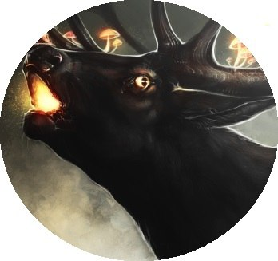
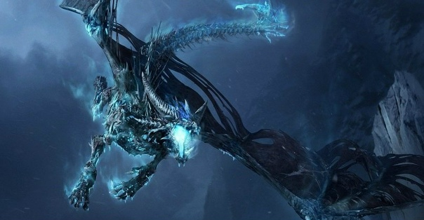
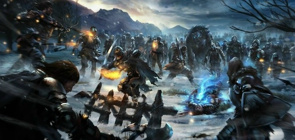
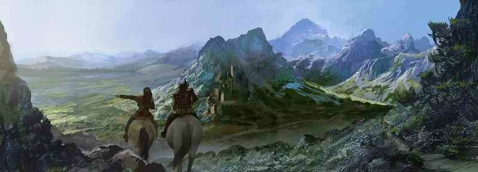

Эльха́р Аса́т — Ранее известный как Великий Архитектор Асат, Творец Космоса, Немой Бог, ныне же, просто Бог-создатель острова Эльхар, Выживший, но опустившийся. Являясь вездесущим, одним из сильнейших, одним из первейших, он стал не просто слабым, он стал медленно истлевающим. Чтобы понять перво-историю Эльхара, причины его необычного появления и многое другое, советуем ознакомиться с описанием сего божества.
Крупный остров Эльхар (приблизительно равен Гренландии) возник шестнадцать тысяч лет назад, в последствии работы водных вулканов, что были разбужены волей бога Эльхара Асата. Всего за три тысячи лет, лава водных глубин полностью сформировала остров, а на его северной части из-за того, что бог вложил в своё творение всю свою жизнь, образовалась необычная гора, которую потом прозвали Хрустальным Пиком. Далее, по итогу ещё трёх тысяч лет новая земля остыла, а на неё ветрами и морями были занесены растения и живые организмы, изменяющиеся в следствии магической активности, что обуславливает очень своеобразную природу Эльхара, которая была сформирована за десяток веков, окутывая весь остров густыми лесами. Венцом этой многогранной, прекрасной и порою опасной природы стали мэрфы.
За почти три тысячи лет мэрфы обзавелись своей богатейшей и мудрейшей культурой, языком, но не без помощи, так как Эльхар Асат и ныне убитый демонами дракон-старейша Тайный всегда помогали им и незаметно делились изначальными знаниями мира. Но случались порою и трагедии в жизни острова. Пять тысяч лет назад, когда Эльхару исполнилось приблизительно 11000 лет, произошло масштабное извержение вулканов, изменившее географию острова, поделив его на несколько природных зон, что немного сократило площадь лесов. Событие было спровоцировано тёмными силами, в битве с которыми мэрфам опять-таки помогла божественная сила Эльхара Асата, в следствии чего появились золотые звери, Хранители Эльхара.
Вслед за всем этим живым разнообразием, которым преобразился замечательный остров Эльхар, четыре тысячи лет назад сюда начали заплывать разнообразные народы и обустраиваться на новой земле. Одними из первых были вампиры, которые заселялись втайне от людей, основав свой город. Далее, в основном, приплывали люди, в меньшем количестве — маглейды (высшие эльфы) и кеольцы (лесные эльфы), которые, к началу этой эпохи, уже давно отделились от высших. Строились города, деревни, поселения, налаживалась морская торговля с другими развитыми народами, что были расположены на востоке, так как огромный океан, что расположен на западе и юге, кишел разнообразными тварями, моряки, уцелевшие после опасных плаваний, пригодной земли там не находили. Были лишь разнообразные миражи плавающих материков, островов и прочих земель, но, скорее всего, это были силуэты жутких созданий, там обитавших.
В центре острова, прямо около вулкана Драконья глотка, вернее, немного левее него, был расположен самый главный, самый развитый город, названый Ноурудом. Мэрфы приняли переселенцев с миром, позволили обустроиться в лучших местах и т.д., но в скором времени тёмная сторона человечества проявилась и гордых мэрфов стали истреблять ради собственной выгоды, ибо те оказались превосходных материалом для зельеваров-алхимиков. Из-за этого численность мэрфов упала, а их единственным местом для житья стал великий лес Мо'огор.
Правда, процветание было недолгим. Около тысячи лет назад свершилось пришествие драколича, которое вновь изменило остров. Некий пережиток прошлого, дракон настолько древний, что застал раскол материков, будучи уже зрелым ящером, Га'Кхарель проснулся ото сна. Но проснулся уже не живым. Была уничтожена лавой вулкана "Драконья глотка" людская столица Ноурд, находившаяся в центре Эльхара, и большая часть леса Южной короны — Мо'огора. Но один великий кеолец отдал свою жизнь, чтобы возродить этот лес. С того времени в оном раскинуло ветви прекрасное древо Силеверр, а позднее руины Ноурда заросли лесом, что был назван Ноурдулом. Лишь благодаря неизвестным героям драколич был запечатан на юго-востоке Эльхара, в Дохарии, под озером Игейна.

Во времена великого предательства, Кхарель был драконом-некромантом, отвергшим все силы, кроме своей собственной. Способность к такой тёмной и сильной магии, ещё во второй эпохе мира, подарил Кхарелю Первый Хаос. Неким противоестественным путем этот дракон смог накопить мощь, достаточную для того, чтобы превратить часть острова в безжизненную пустыню. Когда это осуществлялось, великий герой сказок и легенд лесных эльфов, Силиверр, пытался спасти лес Mo`огор, но потерпел неудачу. Отчасти. Пожертвовав своей жизнью и магией, он сумел возродить лес былой жизнью, а на месте его "смерти" по сей день расположено величественное дерево, которое является отныне сердцем леса. Так, лесные эльфы стали ближе к мэрфам и вампирам, между ними появилось уважение.
Через некоторое время, неким способом, о котором уже доподлинно не известно, а истинные события обросли домыслами, но дракона-лича удалось пленить под озером Игейна, что в Дохарии. Кто его победил, и как — все это до сих пор остается загадкой. Скорее всего, мир решили спасти Фьюри, но это только догадки, так как их оказалось бесчисленное множество. Ведь никто и помыслить не может, что великого дракона смогла запечатать под озером простая компашка изгоев общества. Так или иначе, последний отчаянный вопль Кхареля, полный бессильной злобы и обещания мести, вызвал крик земли. Вулканы проснулись, земля стала содрогаться. Столица Эльхара, Ноуруд, была почти полностью уничтожена под натиском земли и лавы, а позднее благополучно заросла лесом, который назвали в честь уничтоженной столицы — Ноурдулом (это было около тысячи лет назад). Всё, что от него осталось — это лишь пара каких-то зданий и полуразрушенный храм Волиеры, который чудом смог уцелеть, так как находился на окраине столицы. В нем таким же чудом остались в живых проклятые или награждённые богиней Волихерой девушки, прозванные Волетрами, которые обитают там до сих пор. Были и меньшие поселения, которых тоже коснулась дрожь планеты, вследствие чего от них остались лишь жалкие руины.
Дохария не всегда представляла собой то жалкое зрелище, которое мы видим сегодня. Еще когда Кхареля пленили под озером, там были угодья лесных кочевников: людей, эльфов, всех тех, кто отверг жизнь в более цивилизованных местах. Где-то через сотню лет после этого заточения всё изменилось. Голос под озером иссушил часть континента, превратив ее в пустошь, изменив природу, делая её искорёженной, полумёртвой, отвратительной, и при этом поглотил души ее обитателей. Души, но не разум. Так появился народ Неживых, вечных стражей Озера, стремящихся оградить других от попыток прийти к Драколичу. Эти существа, более похожие на живые мумии, медленно теряли рассудок, но до последнего момента, когда они уже не могли сопротивляться Зову Кхареля, они сражались с порождениями озера, и охраняли его от случайных путников.
Но всему приходит конец, как и заточению великого драколича. Через тысячу лет он восстал и повёл за собой несусветную армию мёртвых. И не было конца их количеству. Города, деревни разрушались. Жизнь на Эльхаре была под большим вопросом.

Но зло смогли победить, использовав Копьё матери. То самое, которое было создано для Белого Фьюри, посредством которого и смогли отогнать Первый Хаос. Жаль, что когда зло было побеждено, а было это на вершине Хрустального Пика, копьё снова исчезло. (Доп. материал: Сказание о смерти драколича)
Ну, а после, с помощью магии, денег и силы, город Найгель и деревня Дегерима были построены и снова заселены. Наладилась торговля, начали собирать урожай. Эльхаровцы зажили более свободно, без опаски возвращения драколича, записывая в свои старые книги ещё одну легенду — о герое, который отдал жизнь за Эльхар. Снова наступила пора мира.

Совсем недавно был уничтожен драколич, и во славу этого события начался новый календарь. Мир и покой воцарились на Эльхаре, люди были вылечены, дома была отстроены. Но осенью приключилась новая напасть. Из Ноурдула напали демоны Ньярла, присланные орденом этого подлого бога. Кровавые бойни, погромы — люди Эльхара снова берутся за оружие и дают тьме и нечисти достойный отпор. Только сил светлых было недостаточно, чтобы отстоять Дегериму (город) и она пала, отдавшись во власть демонов (середина октября 2014 г.). На данное время победа еще не достигнута, но ужасная война утихла, давая героям время на то, чтобы собрать силы и отвоевать Дегериму. Также, в начале лета второго года этой эпохи, произошёл сильный катаклизм, немножко изменивший географию острова.
...приглашаем Вас творить историю этого мира вместе с другими её жителями и стать участником новых легенд, знаменательных или же ужасающих событий. Узнайте, что произошло, что происходило, исследуйте и развивайтесь в новом мире на острове Эльхар.
Связанные страницы проекта: Эльхар Асат · Мэрфы · Хранители Эльхара · Силеверр · Древурги · Сказание о смерти драколича